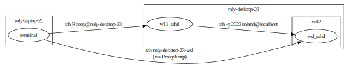

windows11 setup
Table of Contents
1. Introduction
Notes on setup for my primary desktop

1.1. Remap Keyboard
Use PowerToys (free from MS) Keyboard Manager allows directly remapping keys
Remap:
| from | to |
|---|---|
| caps lock | ctrl (left) |
| ctrl (right) | caps lock |
without the second mapping, if caps lock gets enabled there's no easy way to cancel it.
1.2. Setup OpenSSH
1.2.1. SSH to windows
- Enable windows ssh server from system settings.
To verify running:
open admin powershell
> Get-WindowsCapability -Online | Where-Object Name -like 'OpenSSH*' Name : OpenSSH.Client~~~~0.0.1.0 State : Installed Name : OpenSSH.Server~~~~0.0.1.0 State : NotPresent
above shows SSH server not running.
enable SSH server (this takes a few minutes):
> Add-WindowsCapability -Online -Name OpenSSH.Server~~~~0.0.1.0 Path : Online : True RestartNeeded : False
Start SSH service
> Start-Service sshd
configure to start automatically on boot
> Set-Service -Name sshd -StartupType 'Automatic'
ssh-agentalso needs assistance> Get-Service ssh-agent Status Name DisplayName ------ ---- ----------- Stopped ssh-agent OpenSSH Authentication Agent
set it to start manually (whenever someone invokes
ssh-agent)> Get-Service -Name ssh-agent | Set-Service -StartupType Manual
- passwordless login
public key in:
C:\Users\<myusername>\.ssh\authorized_keysif non-administrator accountC:\ProgramData\ssh\administrators_authorized_keysif administrator account.Note that
C:\ProgramDatais hidden. Can change directory to it in powershell, but it won't normally appear in file explorer.relax settings in
C:\ProgramData\ssh\sshd_config.we want to uncomment a few disabled-by-default features:
PubkeyAuthentication yes AllowAgentForwarding yes AllowTcpForwarding yes
1.2.2. SSH to WSL2
in wsl2 shell:
install openssh:
$ sudo apt-get install openssh-server
default config listens on port 22:
$ cat /etc/ssh/sshd_config | grep -i port #Port 22
listen on port 2022 instead, since
sshdrun by windows11 occupies port 22 already$ sudo sed -i -E 's:^#Port.*$:Port 2022:' /etc/ssh/sshd_config $ cat /etc/ssh/sshd_config | grep -i port #Port 2022
start ssh service
NOTE: relies on systemd. older WSL2 (sometime before 2023) didn't have systemd, so might need to upgrade first
$ sudo systemctl enable ssh Synchronizing state of ssh.service with SysV service script with /lib/systemd/systemd-sysv-install. $ sudo systemctl stop ssh # in case already running, perhaps on wrong port $ sudo systemctl start ssh
should be able to see it running now
$ ps -A | grep sshd 20139 ? 00:00:00 sshd
and verify listening on the right port
$ netstat -a -n | grep tcp tcp 0 0 0.0.0.0:2022 0.0.0.0:* LISTEN tcp 0 0 127.0.0.53:53 0.0.0.0:* LISTEN tcp6 0 0 :::2022 :::* LISTEN
verify wsl2 can ssh to itself
$ ssh -p 2022 localhost
1.2.3. SSH from external host
in external host's ~/.ssh/ssh_config:
# my windows desktop Host roly-desktop-23 User Rcony HostName 192.168.1.10 # wsl hosted from windows Host roly-desktop-23-wsl User roland HostName localhost Port 2022 ProxyJump roly-desktop-23
Then from external host:
$ eval $(ssh-agent -s) $ ssh-add ..passphrase.. $ ssh roly-desktop-23-wsl roland@roly-desktop-23:~$